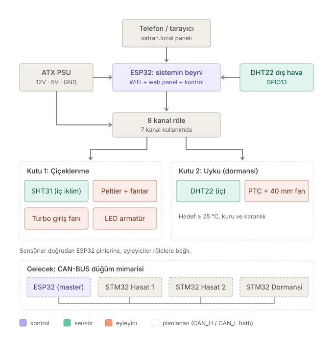
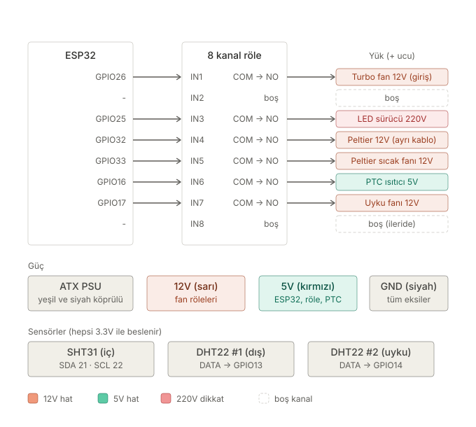
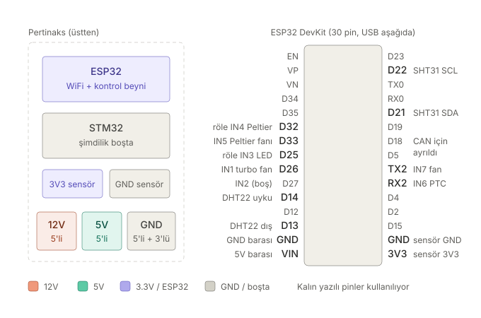

Son güncelleme: 20 Eylül 2026. Bu sayfa sistemin şu anki elektrik devresinin tamamını anlatıyor. Tek bir ESP32 iki kutuyu birden yönetiyor: çiçeklenme (hasat) kutusu ve uyku (dormansi) kutusu. Pertinaksta lehimli bir STM32 de var ama şimdilik kullanılmıyor; ileride her kutuya bir STM32 düğüm bağlanacak (en alttaki bölüm).
1. Genel görünüm

2. Bağlantı şeması

3. Pertinaks düzeni ve ESP32 pinleri

4. Pin tablosu
| ESP32 pini | Nereye | Görev |
|---|---|---|
| VIN | 5V barası | ESP32 besleme (asla 12V değil) |
| GND (sol) | GND barası | Ortak toprak |
| 3V3 | 3V3 sensör barası | SHT31 + 2× DHT22 besleme |
| GND (sağ) | GND sensör barası | Sensör toprakları |
| D21 | SHT31 SDA | Çiçeklenme kutusu iç sıcaklık/nem (I2C) |
| D22 | SHT31 SCL | I2C saat hattı |
| D13 | DHT22 #1 DATA | Dış hava (kutuların dışı) |
| D14 | DHT22 #2 DATA | Uyku kutusu içi |
| D26 | Röle IN1 | Turbo giriş fanı (12V) |
| D27 | Röle IN2 | Boş (ikinci fan için) |
| D25 | Röle IN3 | LED sürücü (220V) |
| D32 | Röle IN4 | Peltier (12V, ~6 A) |
| D33 | Röle IN5 | Peltier sıcak taraf fanı (12V) |
| RX2 (GPIO16) | Röle IN6 | Uyku kutusu PTC ısıtıcı (5V) |
| TX2 (GPIO17) | Röle IN7 | Uyku kutusu 40 mm fan (12V) |
| D4, D5, D18, D19, D23 | - | İleride CAN-BUS (MCP2515) için boş bırakıldı |
5. Klemens baraları
| Bara | Giriş | Çıkışlar |
|---|---|---|
| 12V (5'li yaylı) | PSU sarı | IN1, IN5, IN7 röle COM'ları (1 yuva yedek) |
| 5V (5'li yaylı) | PSU kırmızı | ESP32 VIN, röle kartı VCC, IN6 COM (PTC), Peltier soğuk taraf 5V fanı (+) |
| GND (5'li yaylı + 3'lü vidalı) | PSU siyah | ESP32 GND, röle GND, turbo fan (−), Peltier sıcak fan (−), 5V fan (−), PTC (−), uyku fanı (−) |
| 3V3 sensör (header) | ESP32 3V3 | SHT31 VIN, DHT22 #1 (+), DHT22 #2 (+) |
| GND sensör (header) | ESP32 GND | SHT31 GND, DHT22 #1 (−), DHT22 #2 (−) |
Peltier ve LED'in 220V hattı bu baralardan geçmez: Peltier çok akım çektiği için PSU'dan ayrı kalın kabloyla beslenir, 220V ise hiçbir şekilde pertinaksa girmez.
6. Adım adım kurulum
- PSU'yu tanıSarı = 12V, kırmızı = 5V, siyah = GND. Turuncu (3.3V) ve mor (5VSB) kullanılmaz, uçlarını makaronla yalıt. PSU'nun açılması için yeşil (PS_ON) kablo bir siyah kabloya köprülüdür.
- Baraları besleBir sarı kabloyu 12V klemensine, bir kırmızıyı 5V klemensine, bir siyahı GND klemensine bağla; uçlara yüksük tak. Pertinaksın altında her klemensin bacaklarını kalın (0,75–1 mm²) bir telle birleştir; ince lehim köprüleri akım taşımaz. GND'ye 8 bağlantı gerektiği için 5'li klemensin yanına 3'lü vidalı klemens ekle ve aynı hatta birleştir.
- ESP32'ye güç ver5V barası → ESP32 VIN, GND barası → ESP32 GND. 12V asla VIN'e gitmez (bir ESP32 bu yüzden yandı). Kod yüklerken PSU kapalı olsun, USB'den yükle.
- Röle kartına güç ver5V barası → röle VCC, GND barası → röle GND. Karttaki JD-VCC jumper'ı yerinde kalsın.
- Röle sinyallerini bağlaDişi-dişi jumper ile: D26 → IN1, D25 → IN3, D32 → IN4, D33 → IN5, RX2 (GPIO16) → IN6, TX2 (GPIO17) → IN7. IN2 ve IN8 boş kalır. Röleler aktif-LOW çalışır; firmware açılışta hepsini kapalı başlatır.
- Sensör baralarını kurPertinaksa iki kısa erkek header şeridi lehimle ve bacaklarını alttan birleştir. Birini ESP32'nin 3V3 pinine, diğerini ESP32'nin ikinci GND pinine bağla. Üç sensör buradan beslenir.
- SHT31'i bağla (çiçeklenme kutusu içi)VIN → 3V3 barası, GND → GND sensör barası, SCL → D22, SDA → D21. Kablo 50 cm'yi geçmesin; sensörü Peltier'in soğuk bloğundan ve LED'den uzağa koy.
- DHT22'leri bağlaModülün (+) ucu → 3V3 barası, (−) ucu → GND sensör barası. DATA/OUT: dış sensör → D13, uyku kutusu sensörü → D14. 5V'tan besleme; modüldeki direnç ESP32 pinine 5V verir. Kablo boyu 1 m'ye kadar sorunsuz.
- 12V yükleri bağla12V barası → IN1, IN5 ve IN7'nin COM uçları. NO uçları → turbo fan (+), Peltier sıcak taraf fanı (+), uyku kutusu 40 mm fan (+). Fanların eksi uçları GND barasına.
- Peltier'i ayrı hattan bağlaPSU'dan iki sarı kablo birlikte → IN4 COM; IN4 NO → Peltier kırmızı kablo; Peltier siyah kablo → PSU'dan iki siyah kablo birlikte. Peltier ~6 A çeker, bu yüzden pertinakstan geçmez ve ince kablo kullanılmaz.
- 5V yükleri bağla5V barası → IN6 COM; IN6 NO → PTC (+); PTC (−) → GND barası. Peltier'in soğuk taraf 5V fanı röleye bağlanmaz: (+) doğrudan 5V barasına, (−) GND'ye; sürekli döner ve kutu içindeki havayı karıştırır.
- LED sürücüsünü bağla (220V)Sürücünün fiş kablosundaki iki damardan birini kes ve iki ucunu IN3'ün COM ve NO vidalarına bağla; diğer damar kesintisiz kalır. Uçlarda yüksük kullan, röle vidalarının üstünü kapat. 220V pertinaksa ve klemens baralarına girmez. Fişin prize takılış yönüne göre kesilen damar nötr olabilir, yani röle kapalıyken bile sürücü girişinde 220V bulunabilir; sürücüye dokunmadan önce fişi çek.
- İlk çalıştırma testi(a) Enerjisizken multimetrenin bip modunda 5V–GND ve 12V–GND arasında kısa devre olmadığını kontrol et. (b) Yükleri takmadan PSU'yu aç; baralarda 12V ve 5V, sensör barasında 3,3V ölç. (c) Seri monitörde üç sensörün değerlerini gör. (d) Web panelinde her butona bas, rölelerin tık sesini duy. (e) Sonra yükleri tek tek bağlayıp tekrar dene.
7. Kontrol mantığı (özet)
- Çiçeklenme kutusu: hedef 13–17 °C. Dış hava içeriden en az 2 °C soğuksa kutu fanla dış havayla soğutulur, değilse Peltier devreye girer. Peltier en az 2 dakika açık/kapalı kalır; kapandıktan sonra sıcak taraf fanı 60 saniye daha döner. Kutu 10 °C'nin altına inerse Peltier kapanır.
- Nem: fan nem için yalnızca dışarıdaki hava gerçekten daha kuruysa (çiğ noktası düşükse) ve Peltier çalışmıyorken açılır.
- LED: internet saatine göre 11 saat açık (varsayılan 20:00–07:00, böylece LED ısısı serin saatlere denk gelir).
- Uyku kutusu: PTC 25 °C'nin altında açılır, 26,5 °C'de kapanır; 30 °C'yi geçerse veya sensör okunamazsa her durumda kapalı kalır.
- Web panel: LED, fan ve Peltier için Aç / Kapat / Otomatik butonları; manuel komut 2 saat sonra otomatiğe döner. Saat başı ve buçukta, o 30 dakikanın ortalama ölçümleri ve rölelerin yüzde kaç açık kaldığı ESP32'nin flaş belleğine kayit.csv olarak yazılır; panelde son 48 saatin grafiği görünür ve dosya indirilebilir. Bunun için ek donanım gerekmez. WiFi koptuğunda da kontrol çalışmaya devam eder.
8. Gelecek: CAN-BUS düğüm mimarisi
Pertinakstaki STM32'yi bu yüzden lehimledim. 2. hasat zamanı geldiğinde 1. hasat kutusundaki safranları çoğaltma kutusuna alacağım ve sistem üç düğüme bölünecek:
- STM32 #1 → 1. hasat kutusu
- STM32 #2 → 2. hasat kutusu
- STM32 #3 → dormansi kutusu
STM32'ler slave düğüm olacak: kendi kutusunun sensörlerini okuyup komutları uygulayacak ve verileri CAN-BUS (MCP2515 modülleri, bükümlü CAN_H/CAN_L hattı, iki uçta 120 Ω sonlandırma) üzerinden ESP32'ye gönderecek. ESP32 ise WiFi'yi, web panelini ve bütün sistemin karar mantığını yöneten ana beyin olarak kalacak. Bu yüzden ESP32'de D4, D5, D18, D19 ve D23 pinleri CAN modülü için boş bırakıldı.